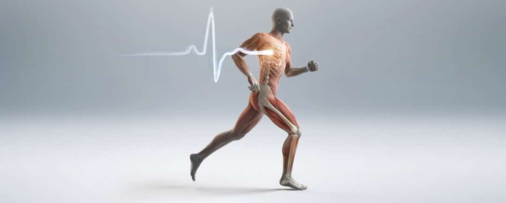
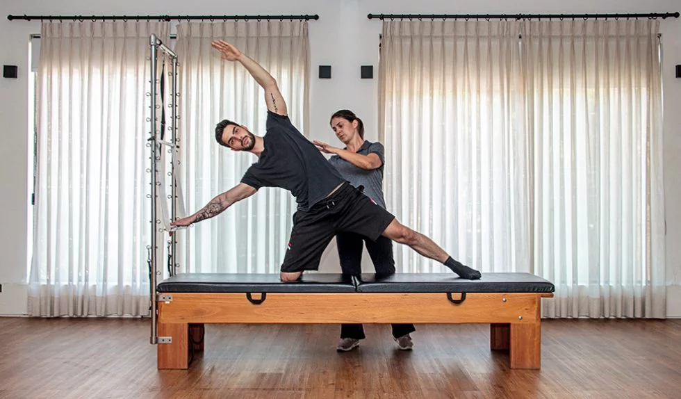
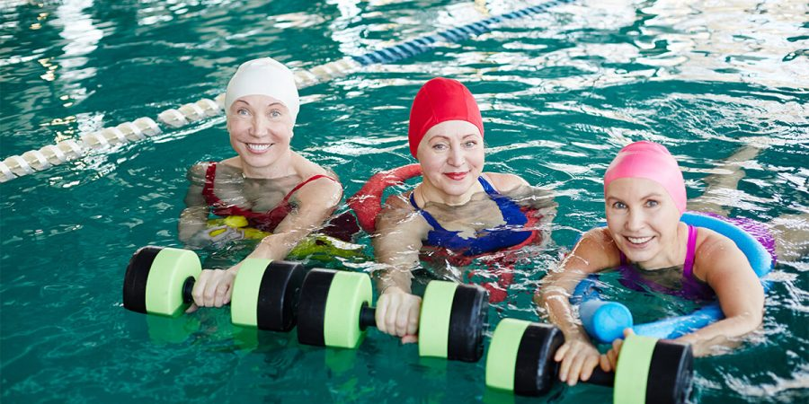
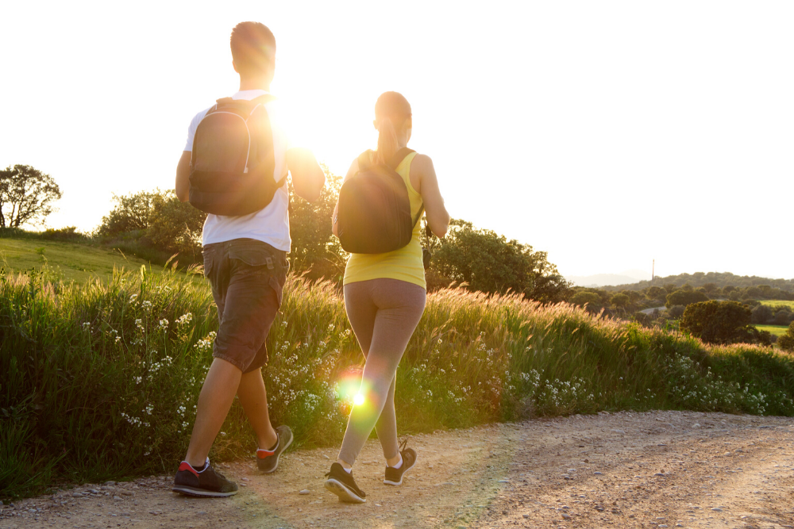
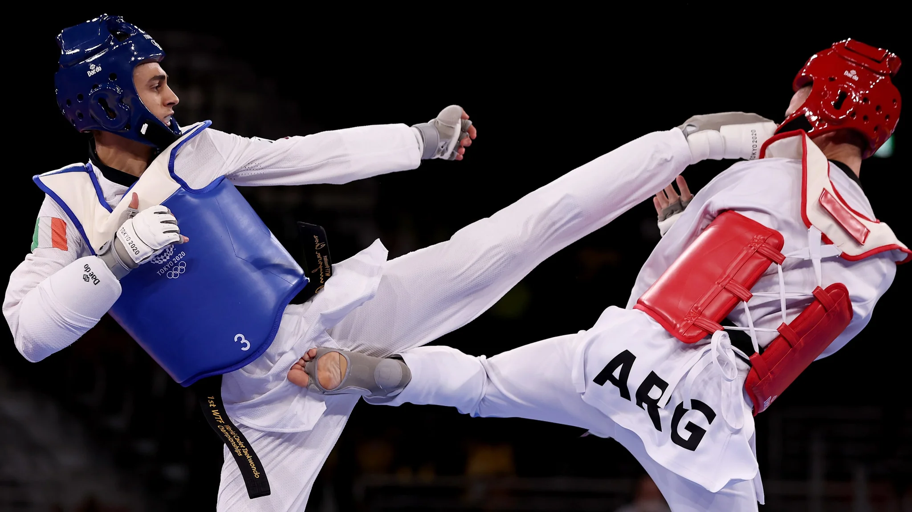
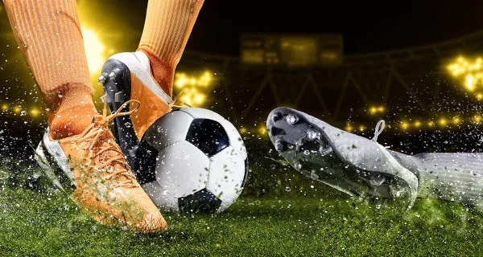

Corpo em movimento

O corpo humano foi concebido e projetado para se exercitar, do início de sua existência até o fim da vida. Músculos, tendões, ligamentos, ossos e cartilagens formam um complexo sistema onde o objetivo final –o movimento– seja realizado da maneira mais precisa possível, com o menor gasto energético. Através do exercício físico podemos integrar todos os sistemas orgânicos e adquirir movimentos mais precisos, mais fortes e mais eficientes.
As consequências dos exercícios físicos supervisionados são impressionantes e com o passar dos dias se descobre algum novo benefício trazido pela prática regular e supervisionada deles. No que diz respeito ao aparelho locomotor, os ganhos vão muito além da estética corporal.
O exercício e as fases da vida
Na infância, as habilidades básicas (andar, correr, saltar, arremessar, empurrar e puxar) são desenvolvidas principalmente através da recreação. É possível desde esse período realizar atividades coordenadas para estimular o controle neural desses movimentos, integrando assim o sistema nervoso e o aparelho locomotor. Esses estímulos são críticos para todo o período de vida, onde as bases da “memória do exercício” serão construídas e auxiliarão no desempenho físico e motor através dos anos. Além disso, os exercícios físicos são estímulo para o crescimento e desenvolvimento da massa, Não podemos esquecer que os exercicios fisicos é fundamental para manter o peso sob controle e afastar (e combater)a obesidade e ajuda a previnir de uma série de doenças e aumentam a longevidade.
Beneficios de corpo em movimento:
Melhora nas articulações
Garantia da qualidade do sono
Diminuição de dores
Redução do risco de doenças
Melhora da saúde mental
Alívio do estresse
Ganhos em autoestima
Sugestões de atividades fisicas:
1-Pilates
Trata-se de um método que une exercícios fisicos e alongamentos que o utilizam o proprio peso do corpo para a sua execução. Tem como objetivo trazer a reeducação do movimento, buscando conscientizar o individuo sobre o equilibrio corporal e mental.

2-Hidroginástica
Se você sofre com problemas nas articulações e não pode realizar exercicios que causem impacto,essa é a atividade certa para você.
Como todos os movimentos são executados dentro da agua, o corpo não é afetado como nas praticas comuns, o que proveme maior relavamento dos músculos e ajuda a aliviar as tensões do dia a dia.

3-Caminhada
Esse é um dos esportes mais baratos e fáceis de se praticar que existem, e so caminhar! E os equipamentos necessários são poucos, apenas roupa confortável, um par de tênis adequado e uma boa garrafinha de água para acompanhar.Essa atividade auxilia na redução do inchaço das pernas e tornozelos, ajuda a previnir a obesidade e colabora com a perda de peso.

4-Artes marciais
As artes marciais, trabalham bastante na força e coordenação motora, é muito boa para reforçar a disciplina e o respeito às regras sociais nas crianças, que podem começar na atividade a partir do 4 anos de idade.

5-Futebol
O esporte é um dos preferidos dos meninos e meninas de todo o Brasil, de qualquer classe social. Nas escolinhas de futebol, as crianças aprendem como se deslocar no espaço e trabalhar em equipe, além de desenvolver resistência e coordenação motora.
